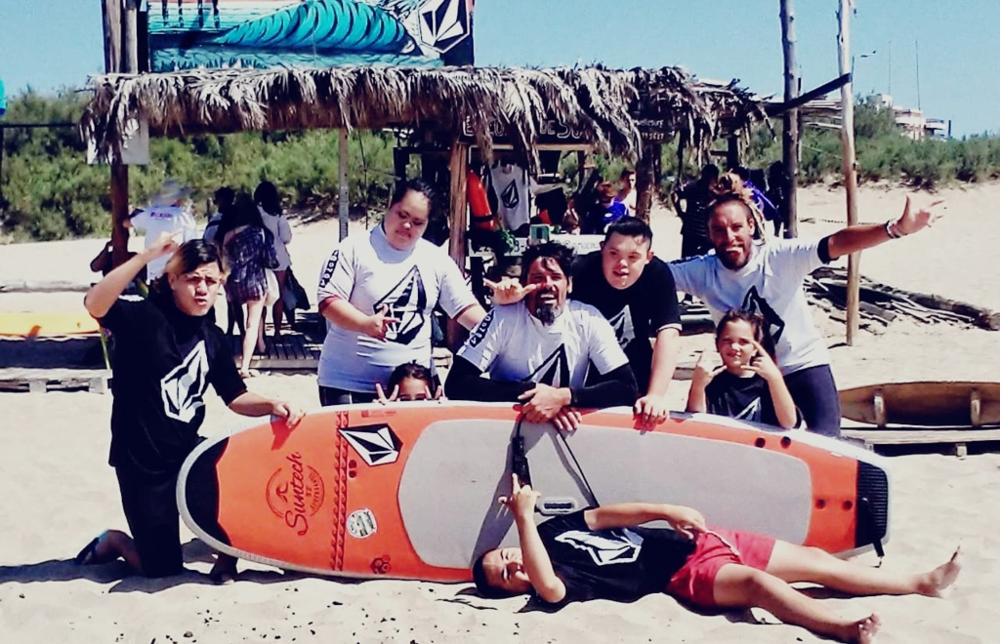
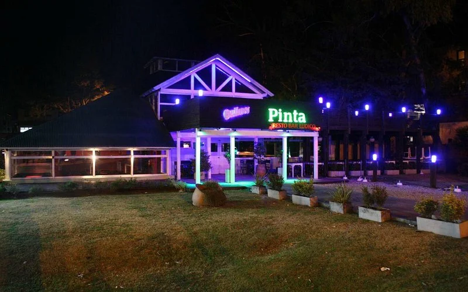
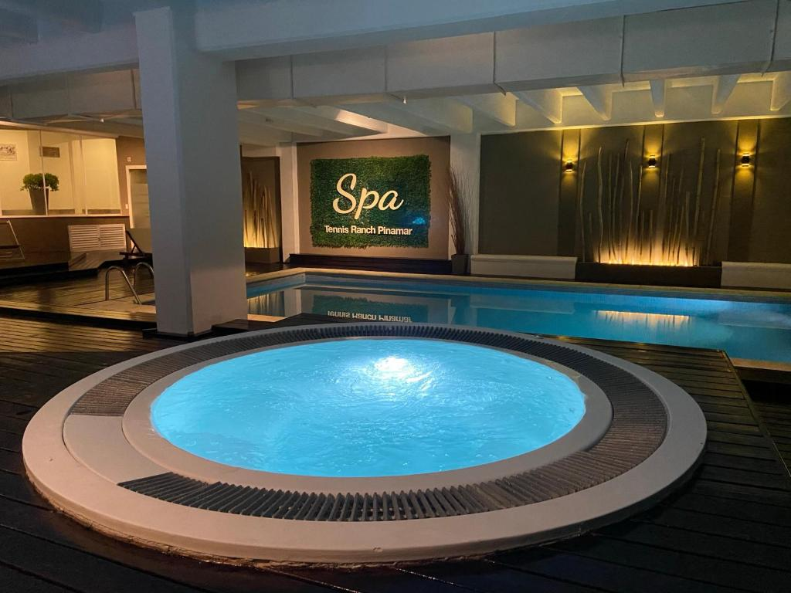
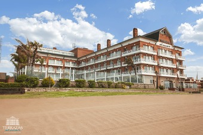
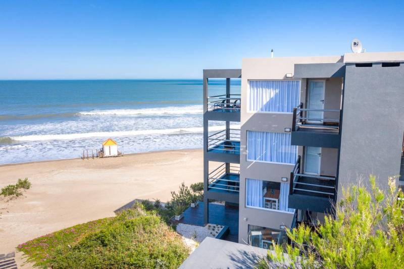
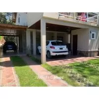
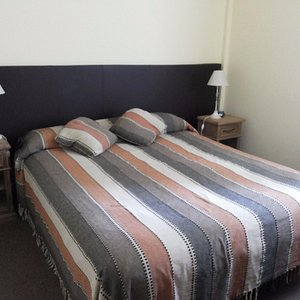

Actividades y entrenimiento
Pinamar ofrece una amplia variedad de actividades y entretenimiento para todos los gustos. Los visitantes pueden practicar deportes como el golf, el tenis, el pádel o el fútbol. También pueden visitar museos, galerías de arte, teatros o cines. Además, la ciudad cuenta con una animada vida nocturna con bares, discotecas y pubs.
Visita las playas de Pinamar
Las playas de Pinamar son algunas de las más hermosas de la Argentina. Son largas, amplias y con arena blanca y fina. Hay playas para todos los gustos, desde playas tranquilas y familiares hasta playas concurridas y animadas.

Disfrutar de los deportes acuáticos
En Pinamar puedes practicar una variedad de deportes acuáticos, como surf, windsurf, kitesurf, kayak y paddle surf. Hay escuelas y clubes que ofrecen clases para todas las edades y niveles de experiencia.
Actividades para la familia
Asiste a un show infantil
En Pinamar se realizan una variedad de shows infantiles durante todo el año, como espectáculos de títeres, magia y circo.
Actividades para adultos
Disfruta de la vida nocturna
Pinamar ofrece una animada vida nocturna, con discotecas, bares y pubs para todos los gustos.
Visita un spa
Hay varios spas en Pinamar que ofrecen una variedad de tratamientos para relajarse y renovarse.

Dónde alojarse en Pinamar
Hoteles
Los hoteles en Pinamar son reconocidos por su hospitalidad y comodidades excepcionales. Desde lujosos resorts hasta acogedores hostales, la ciudad ofrece una variedad de opciones de alojamiento para satisfacer los gustos y presupuestos de todos los viajeros. Muchos de estos establecimientos se encuentran estratégicamente ubicados, brindando fácil acceso a las principales atracciones, restaurantes y centros comerciales.
Apartamentos
Los apartamentos en Pinamar son un testimonio arquitectónico de la elegancia playera. Desde sus balcones se despliegan vistas panorámicas que capturan la esencia del océano Atlántico, invitando a los residentes a sumergirse en la serenidad del paisaje marino. Estos refugios modernos y acogedores se integran armoniosamente con el entorno, con diseños que fusionan la sofisticación urbana con la frescura de la brisa marina.
Casas de vacaciones
La oferta de alojamientos es diversa, desde acogedores bungalows hasta lujosas residencias, cada una con su encanto particular. La mayoría de estas propiedades cuentan con comodidades modernas, como cocinas completamente equipadas, áreas de entretenimiento y espacios diseñados para compartir momentos inolvidables con amigos y familiares.
Hostales
Los hostales en Pinamar son conocidos por su atmósfera relajada y su atención personalizada, brindando a los visitantes la oportunidad de sumergirse en la auténtica vida local y conectarse con otros viajeros de todo el mundo. Estos establecimientos suelen ubicarse estratégicamente, permitiendo un fácil acceso a las principales atracciones de la ciudad y a las playas más populares.
Cómo llegar a Pinamar
Pinamar se encuentra aproximadamente a 342 kilómetros de la Ciudad de Buenos Aires, lo que puede tomar alrededor de 4 horas en automóvil, dependiendo del tráfico y las condiciones de la carretera.
Descubre la Magia de Pinamar con Traslados Combis
Bienvenido a la experiencia única que te ofrece nuestra empresa de turismo para llegar a Pinamar, un destino encantador en la costa argentina. Nos enorgullece ser tu guía en este viaje, brindándote comodidad, seguridad y la oportunidad de explorar las maravillas que este lugar tiene para ofrecer.
Reserva tu viaje
Comienza tu aventura reservando tu viaje con nosotros. Nuestro equipo de expertos en turismo estará encantado de ayudarte a personalizar tu itinerario, adaptándolo a tus preferencias y necesidades específicas. Desde el momento en que decides embarcarte en esta experiencia, nos aseguramos de que todo esté listo para que disfrutes al máximo.
Salida desde tu ubicación
TrasladosCombis ofrece opciones de salida desde diversas ubicaciones para que encuentres la más conveniente. Ya sea que te encuentres en Buenos Aires o en otra ciudad cercana, nuestro servicio de transporte te recogerá en el punto de encuentro designado, garantizando un inicio cómodo y sin complicaciones.
Llegada a Pinamar
Una vez que llegues a Pinamar, serás recibido por nuestro equipo local, listo para guiarte en tu exploración de este destino de ensueño. Desde playas prístinas hasta actividades emocionantes, te proporcionaremos información valiosa y sugerencias para que aproveches al máximo tu tiempo en este paraíso costero.
Confía en nuestra empresa de turismo para llevarte a este destino fascinante. Deja que nosotros nos ocupemos de los detalles para que tú puedas relajarte y disfrutar de la experiencia. ¡Bienvenido a Pinamar, bienvenido a un viaje excepcional con nosotros!
Atrás